概念图、Godot 模型预览与实际场景分开展示。新增五辆车，包括新 P7 四驱拉力版。
以下图像由 Godot 渲染，模型源文件保存在项目 art_source/screenprint/vehicles。可切换前、后、侧面检查车身轮廓与拉花。
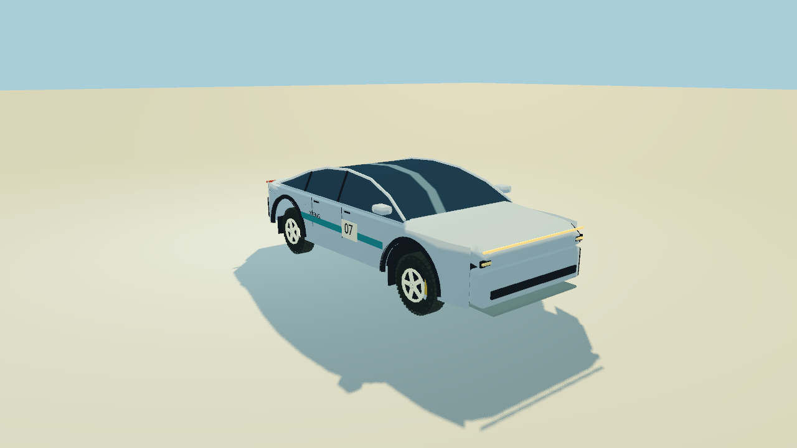
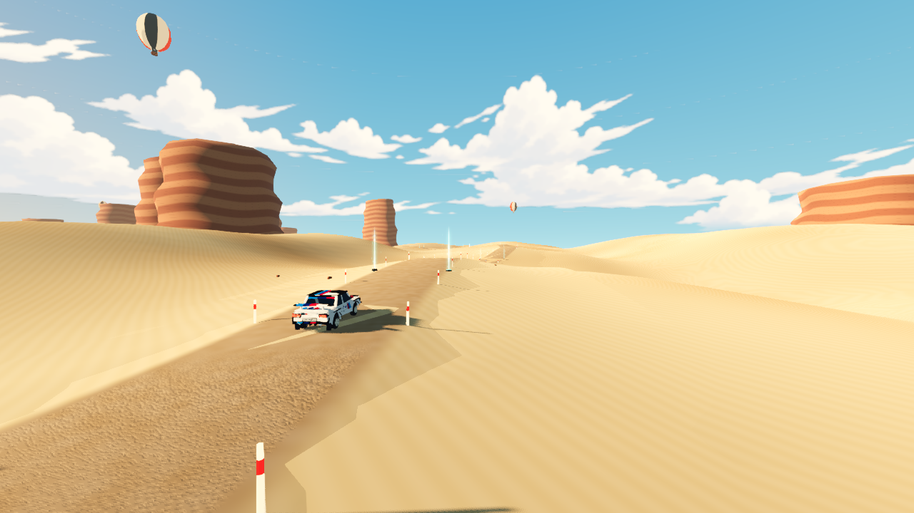
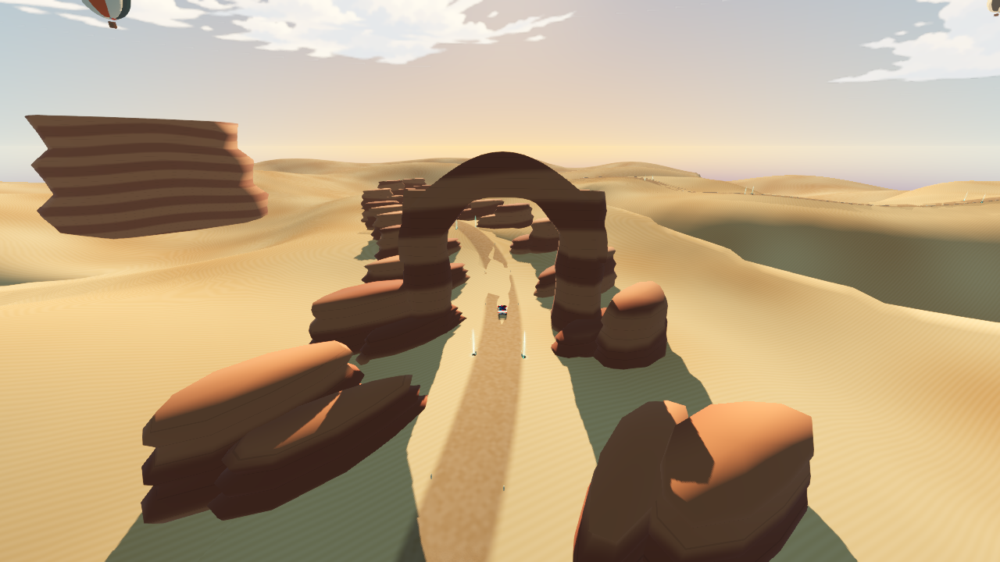
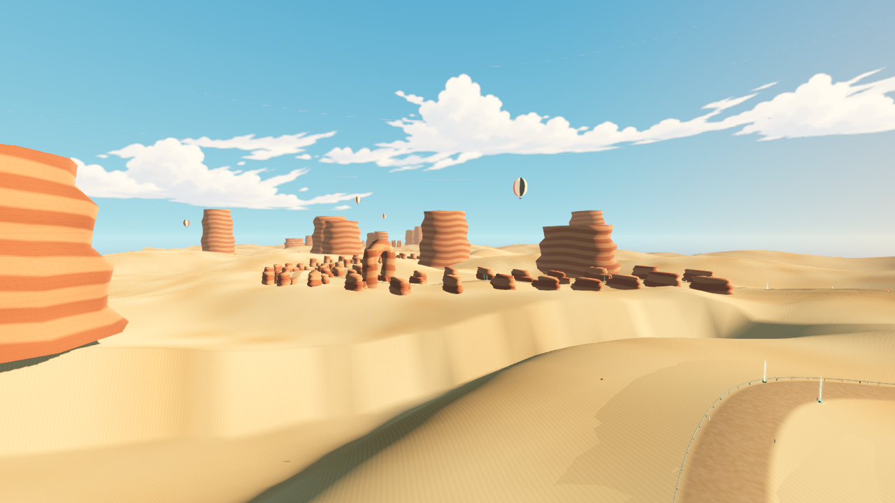
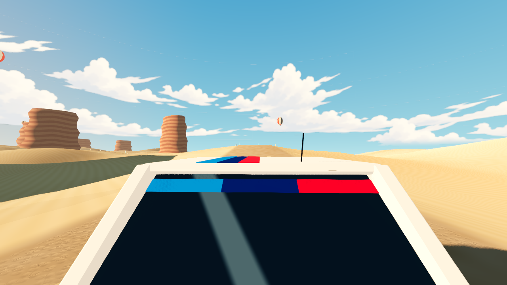
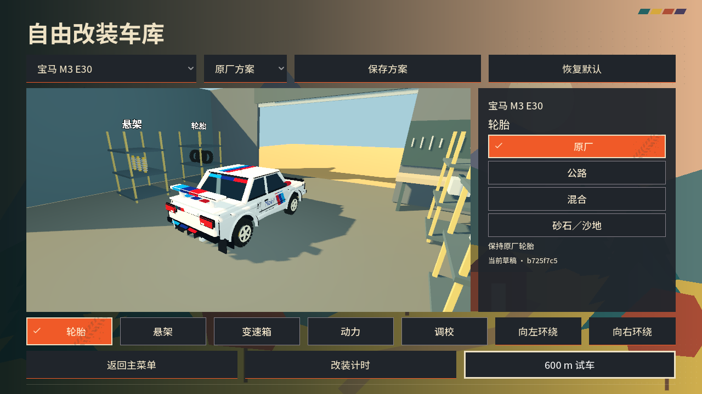
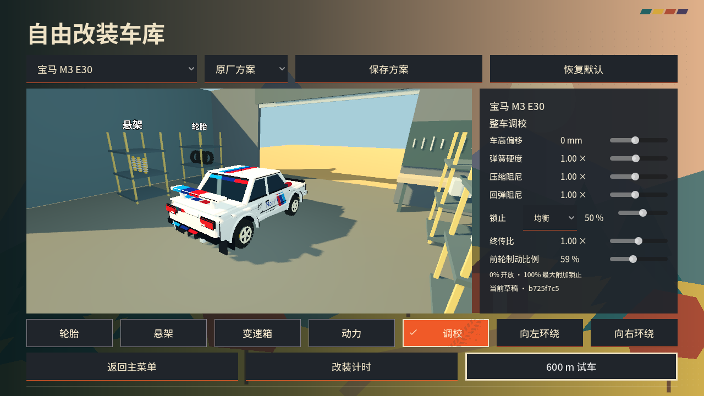
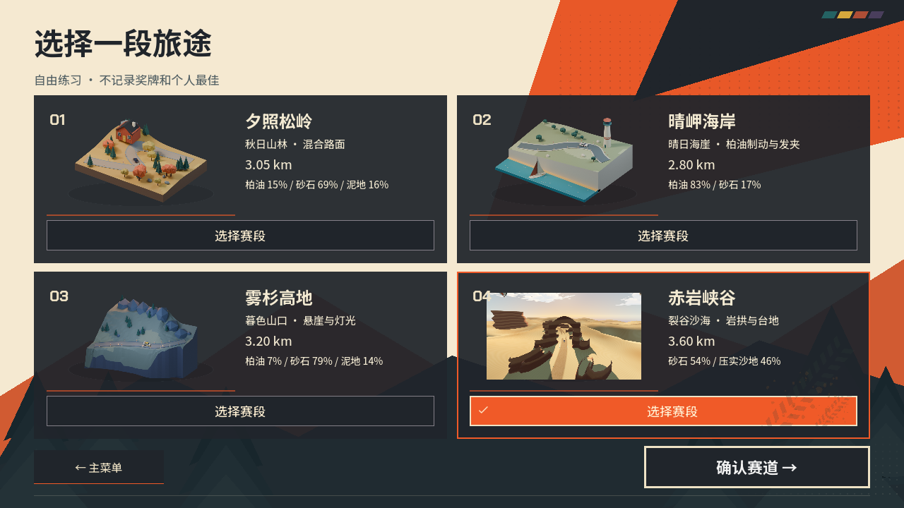
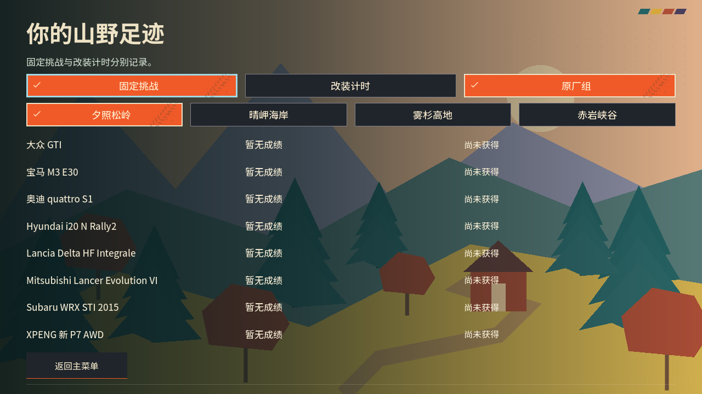
车库操作、试车指标与存档说明
这些是 imagegen 概念稿，不是实际游戏截图。车辆保留黑色描边，环境不使用描边；生成文字未直接用作最终贴花。
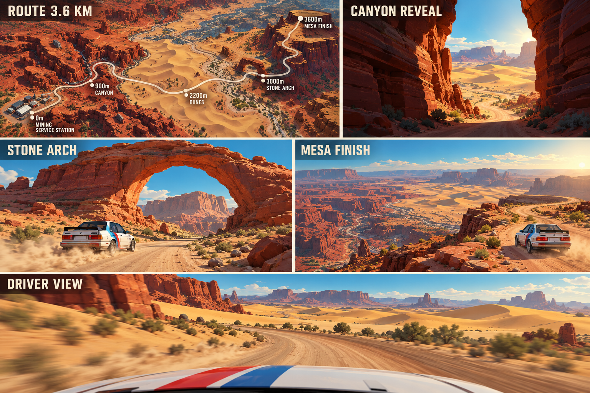
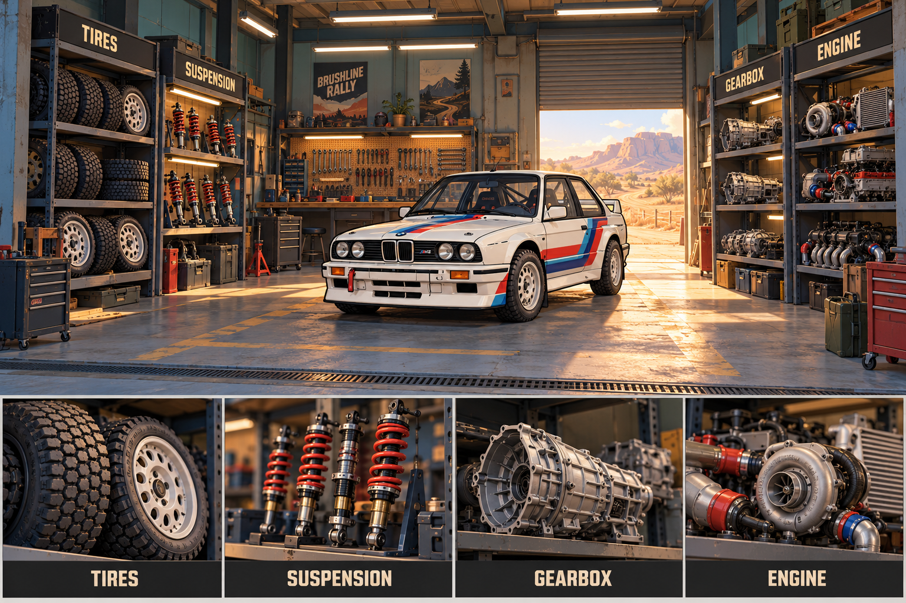
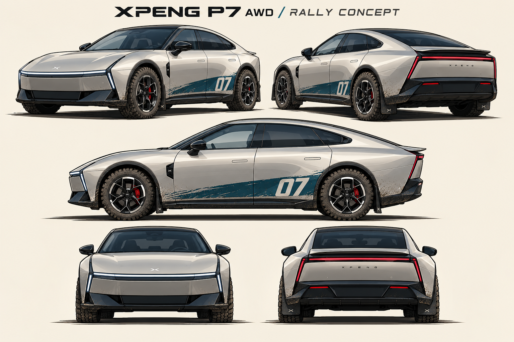
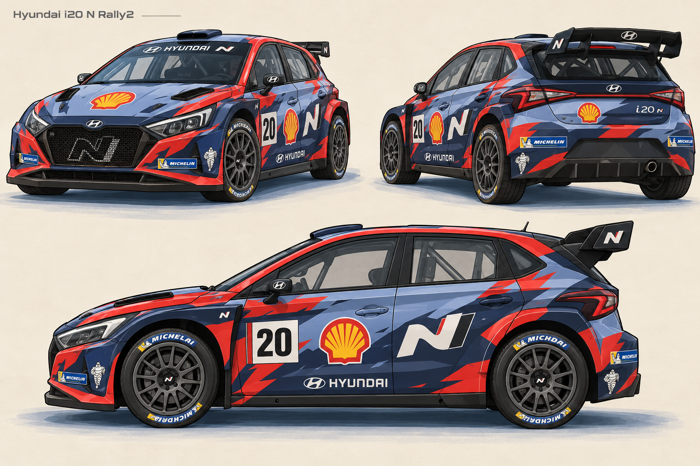
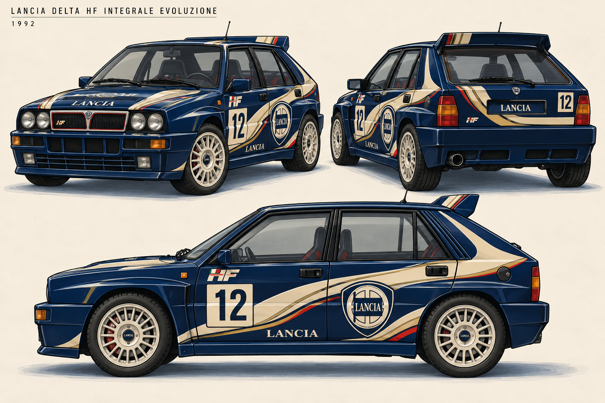
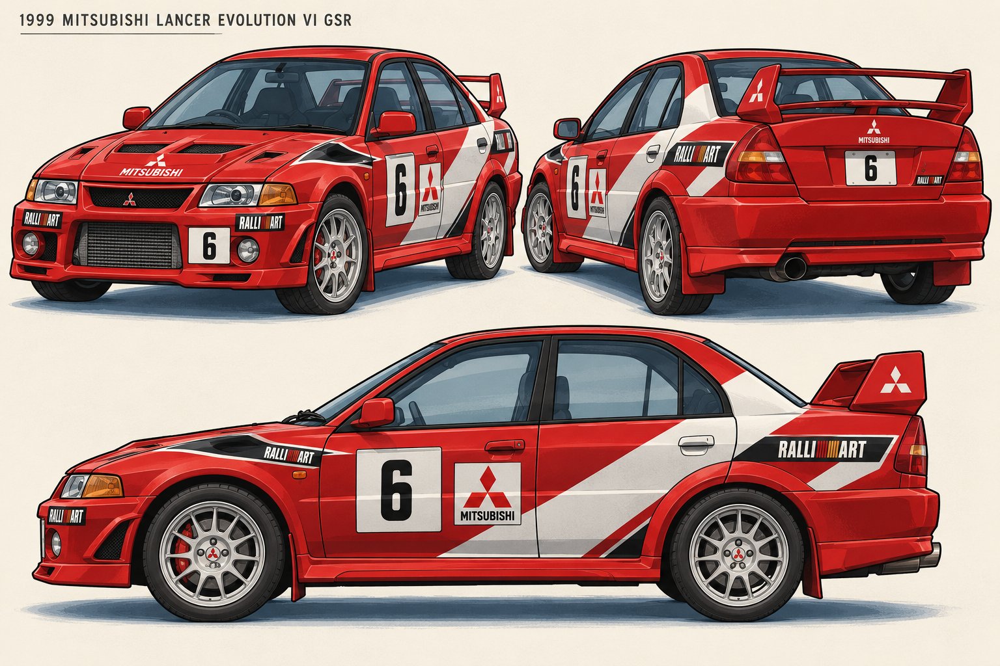
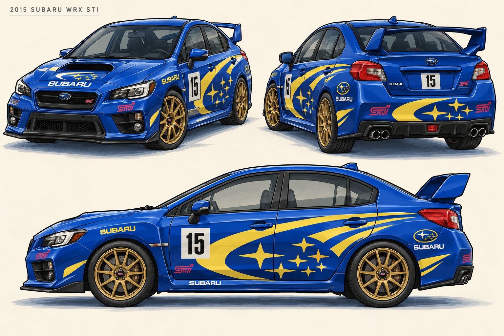
概念设计记录
96 个固定组合全部完赛、零复位；87 个测试套件、3295 项检查通过。原生实机图与同机性能对照已保存；真人难度和实体手柄仍待确认。
实施清单 · 验证摘要 · 车型资料 · 车库说明